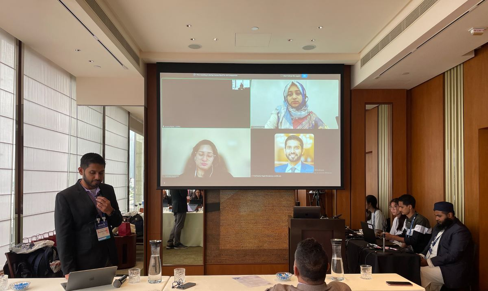
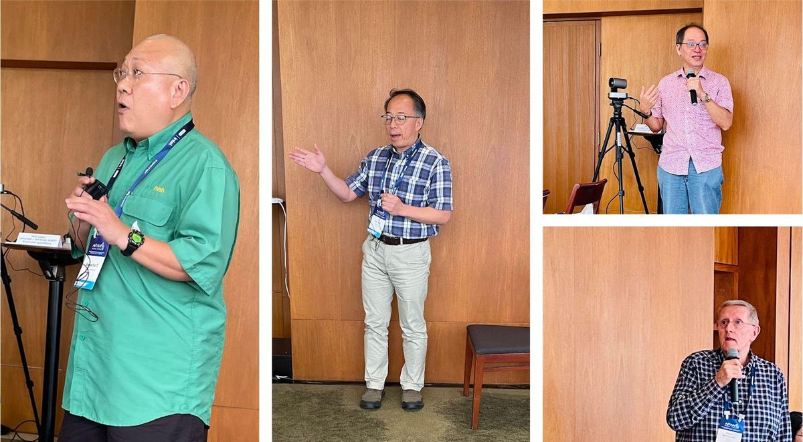
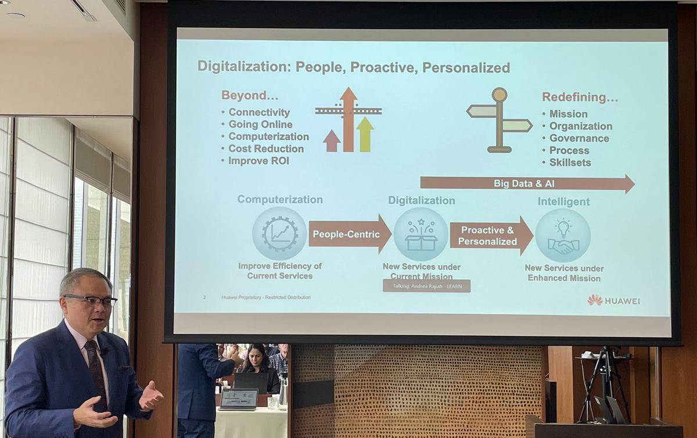

NREN Leaders Forum at APAN60 — held alongside APAN60 in Hong Kong.

Held alongside APAN60 in Hong Kong, the NREN Leaders Forum continued its biannual role as a closed, strategic platform for leaders from National Research and Education Networks (NRENs) across the Asia-Pacific. Since its inception at APAN56, the Forum has evolved into a space for deeper reflection, moving beyond infrastructure discussions to address leadership, capacity development, and the strategic use of data and artificial intelligence (AI) in research and education ecosystems.
The Forum commenced with an Asi@Connect Global Leadership Development Programme (GLDP) experience-sharing session, which foregrounded the importance of data-informed leadership and community-centred capacity building. Contributions were shared by:
Discussions highlighted that leadership development must extend beyond training delivery to focus on what emerging leaders and managers should prioritise, particularly in environments constrained by infrastructure access and human resource limitations. Emphasis was placed on the strategic value of data repositories, access to computing resources, and shared infrastructure, especially for institutions and countries with limited capital investment capacity.

A dedicated segment reviewed the impact of leadership skills development programmes, including one supported by Asi@Connect. The programme involved 22 participants across the region and explicitly aimed to measure outcomes beyond attendance, focusing instead on how leadership tools were applied in real organisational contexts. Participants shared practical insights from negotiation simulations, CEO role-play exercises, reflective listening, and structured feedback models such as the STAR framework, contributing to improved communication, trust-building, and conflict resolution within teams.
The session reinforced the value of mixing senior and early-career leadership perspectives, enabling mutual learning and more inclusive leadership development pathways.
A key aspect of the GLDP discussion was the cross-cultural exchange facilitated through regional engagement. While acknowledging the low representation of women in leadership and technical forums, female participants noted that their contributions were heard and respected. The discussion emphasised the importance of sustained efforts to empower women in technology and leadership roles, including through mentorship, increased visibility, and targeted capacity-building initiatives within the NREN and broader ICT ecosystem.

Following the GLDP session, the Forum featured a keynote by Hong-Eng Koh, Global Chief Public Services Industry Scientist at Huawei, titled "Global Digitalisation Trends and Its Impacts on Education & Research." The keynote framed digitalisation as a transformation that goes far beyond connectivity, towards people-centric, proactive, and personalised systems that reshape governance, institutional processes, and skills development.
Drawing on global digital and AI strategies, the presentation underscored how education and research ecosystems are increasingly shaped by the convergence of cloud computing, AI, data platforms, and high-performance computing (HPC). NRENs were positioned as strategic enablers of national digital agendas, supporting inclusive connectivity, advanced research, digital talent development, and trusted data governance.
Building on the keynote, the Leaders' Insight session on AI's Strategic Impact on Research and Education Networks explored practical and policy-level considerations for AI adoption within NRENs. Discussions covered AI training and infrastructure planning — including upcoming regional training programmes in Bangkok and Laos with multiple industry partners — challenges related to GPU availability and cost, the need for local data delivery to improve performance and accuracy, and experiences shared by regional peers on managing AI accuracy and data delivery. Participants also discussed energy efficiency and sustainability, highlighting the use of AI for anomaly detection in networks, cooling systems, and data centres.
A recurring theme across discussions was the growing importance of data openness. Participants noted that many funding agencies now require open data access as a condition for grants. Examples were shared of regional data hosting models that improve accessibility while managing costs, as well as innovative approaches to building applications on top of APIs to reduce dependence on expensive proprietary services. The group also explored ethical and sustainability considerations in deploying generative AI, including responsible data sharing, governance, and the challenges of exchanging research data and computing resources across borders.
The APAN60 NREN Leaders Forum reinforced the evolving role of NRENs, not only as providers of connectivity but as strategic platforms for leadership development, data stewardship, AI enablement, and regional collaboration. By integrating leadership experience sharing, global digitalisation insights, and practical discussions on AI, sustainability, and data governance, the Forum once again demonstrated the value of sustained, biannual engagement among NREN leaders. As the Asia-Pacific region continues to navigate rapid technological and societal change, the Forum remains a vital space for collective learning, collaboration, and action, supporting a more inclusive, resilient, and future-ready research and education networking ecosystem.
Open the original PDF ↗